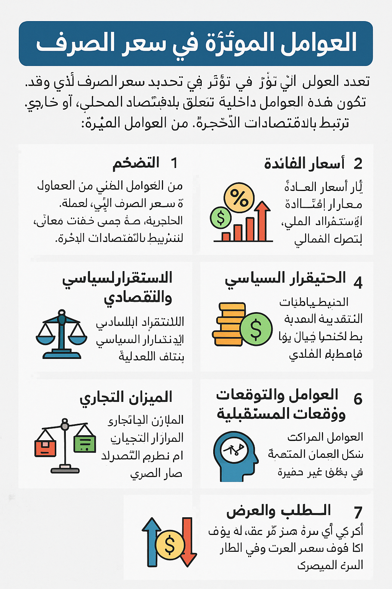

العوامل المؤثرة في سعر الصرف
تتعدد العوامل التي تؤثر في تحديد سعر الصرف لأي عملة، وقد تكون هذه العوامل داخلية تتعلق بالاقتصاد المحلي، أو خارجية ترتبط بالاقتصادات الأخرى. من أبرز العوامل المؤثرة:
1. التضخم:
يُعتبر التضخم من العوامل الرئيسية التي تؤثر على قيمة العملة. عندما يرتفع معدل التضخم في دولة ما، تنخفض القدرة الشرائية للعملة، مما يؤدي إلى انخفاض قيمتها مقابل العملات الأخرى. وعلى العكس، يؤدي انخفاض التضخم إلى تعزيز قيمة العملة.
2. أسعار الفائدة:
تلعب أسعار الفائدة دورًا كبيرًا في تحديد سعر الصرف. عندما ترفع الدولة أسعار الفائدة، يصبح من الجاذب للمستثمرين الأجانب ضخ أموالهم في هذه الدولة للحصول على عوائد أعلى، مما يزيد الطلب على العملة المحلية ويُرفع قيمتها. والعكس صحيح عند انخفاض أسعار الفائدة.
3. الاستقرار السياسي والاقتصادي:
الاستقرار السياسي والاقتصادي يزيد من ثقة المستثمرين في الاقتصاد المحلي. فالدول ذات الأوضاع السياسية والاقتصادية المستقرة تجذب الاستثمارات الأجنبية، مما يساهم في تعزيز قيمة عملتها. بينما الأزمات السياسية أو الاقتصادية قد تؤدي إلى انخفاض قيمة العملة.
4. الاحتياطيات النقدية:
احتياطيات النقد الأجنبي التي تحتفظ بها الدولة تُعتبر من العوامل المؤثرة في سعر الصرف. الدول التي تمتلك احتياطيات نقدية كبيرة يمكنها دعم عملتها في حالة انخفاض قيمتها أو تقلباتها الشديدة، مما يسهم في استقرار العملة.
5. الميزان التجاري:
يُعتبر الفائض أو العجز في الميزان التجاري أحد العوامل الهامة في تحديد سعر الصرف. الدول التي تحقق فائضًا تجاريًا (أي أن صادراتها تتفوق على وارداتها) تشهد عادةً زيادة في قيمة عملتها، بينما الدول التي تعاني من عجز تجاري قد تشهد انخفاضًا في قيمة العملة.
6. العوامل النفسية والتوقعات المستقبلية:
توقعات السوق والمشاعر العامة تؤثر بشكل غير مباشر في سعر الصرف. إذا كانت هناك توقعات بأن العملة المحلية ستتعرض للهبوط في المستقبل، فإن هذا قد يؤدي إلى انخفاض قيمتها بسرعة نتيجة لقيام المستثمرين ببيعها.
7. الطلب والعرض:
كأي سلعة أو خدمة أخرى، يتحدد سعر العملة وفقًا لقوى العرض والطلب في السوق. فإذا زاد الطلب على العملة بسبب استثمارات خارجية أو صادرات متزايدة، سترتفع قيمتها، بينما قد تنخفض إذا قل الطلب عليها.